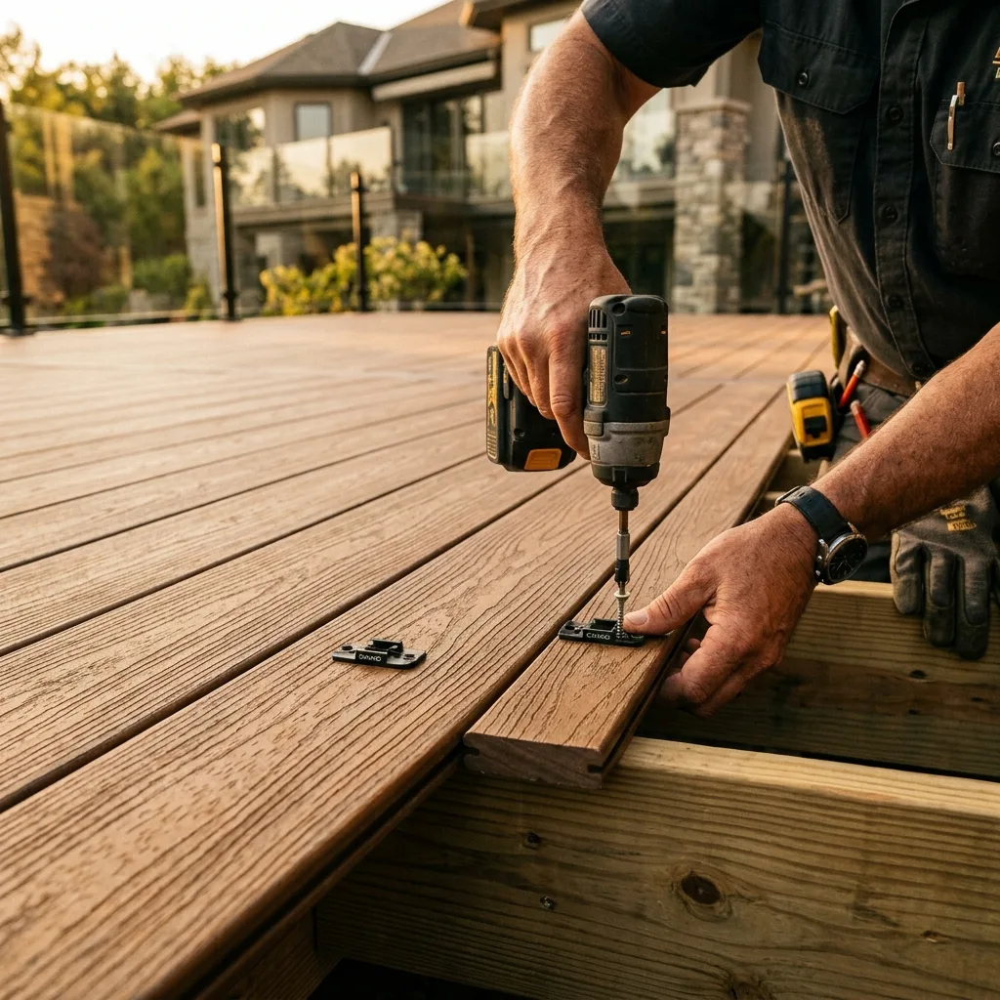
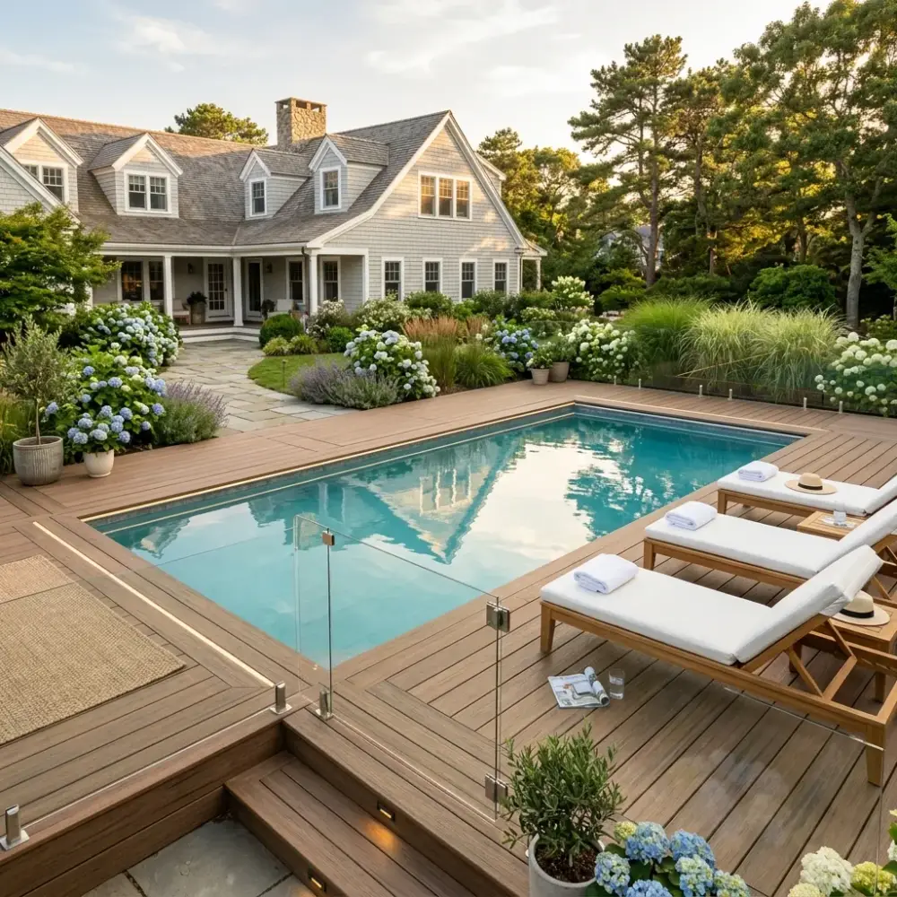
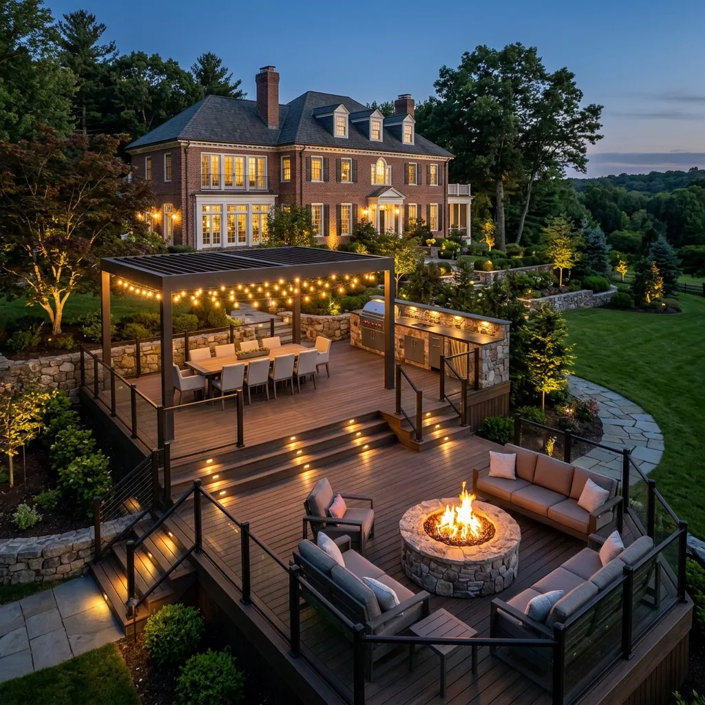
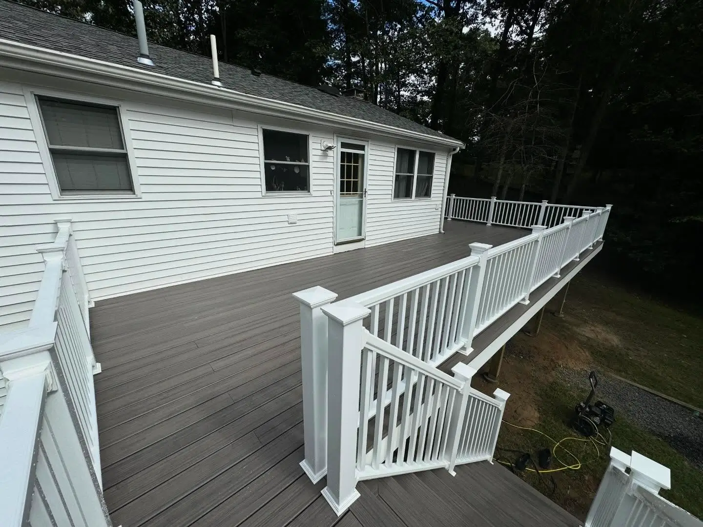

Elevating the areas surrounding your pool with slip-resistant, weather-tested luxury spaces.

RESORT-LIKE LIVING
Seamless Pool-to-Deck Transitions
The space surrounding your pool should feel unified, comfortable, and safe. We design and build poolside decks that integrate beautifully with your landscaping, creating a resort-style atmosphere in your own backyard.
Our poolside projects prioritize slip resistance, heat reduction (so the deck remains cool underfoot on hot summer days), and durable materials that withstand constant chlorine, salt water, and moisture exposure without degrading.

ENGINEERED FOR SAFETY
Advanced Materials for Pool Environments
Pool decks require specialized engineering to ensure safety and code compliance. We strictly select and install materials that prevent slips, provide clear views for supervision, and resist moisture rot.
Capped Polymer/PVC Decking: Premium PVC (like TimberTech Azek) is slip-resistant and stays up to 30% cooler underfoot than traditional wood or standard composite.
Frameless Glass Railings: Tempered glass panels that provide clear visibility of the pool area, ensuring safety without sacrificing landscape views.
Moisture Protection: Marine-grade fasteners and Joist Tape to seal the framing underneath against moisture damage and chlorine corrosion.
OUR PROJECTS
Featured Poolside Installations
Explore a selection of custom poolside decks built to complement luxury New England homes.
Brookline Poolside Deck
Brookline, MA

Chestnut Hill Transition
Chestnut Hill, MA

Bellingham Patio Deck
Bellingham, MA
FAQ
Common Questions About Poolside Decks
For poolside installations, **Capped PVC (Polymer) decking** is highly superior to wood and standard composite. Brands like TimberTech Azek contain no wood fibers, meaning they absorb zero water, do not swell or rot from chlorine/saltwater, and feature superior slip-resistant textures while remaining cooler in direct sunlight.
Massachusetts building codes have strict requirements for pool enclosures, including fence height (usually minimum 48 inches) and self-closing, self-latching gates. We design and install code-approved glass or aluminum pool safety railings that comply fully with local safety guidelines.
We build poolside decks as self-supporting, cantilevered structures rather than attaching them directly to the pool's wall. This prevents structural load issues on the pool shell. The deck boards are carefully cut and cantilevered over the pool's coping stone for a seamless, professional finish.
Start Designing Your Poolside Retreat
Schedule a private on-site consultation to discuss your poolside layout ideas.